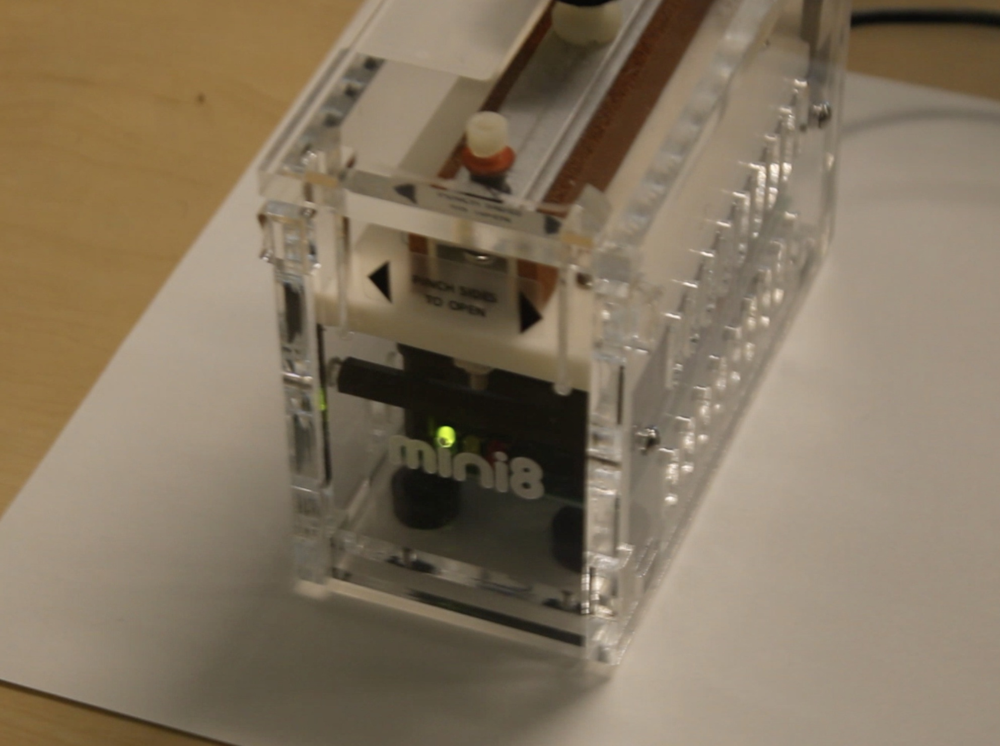
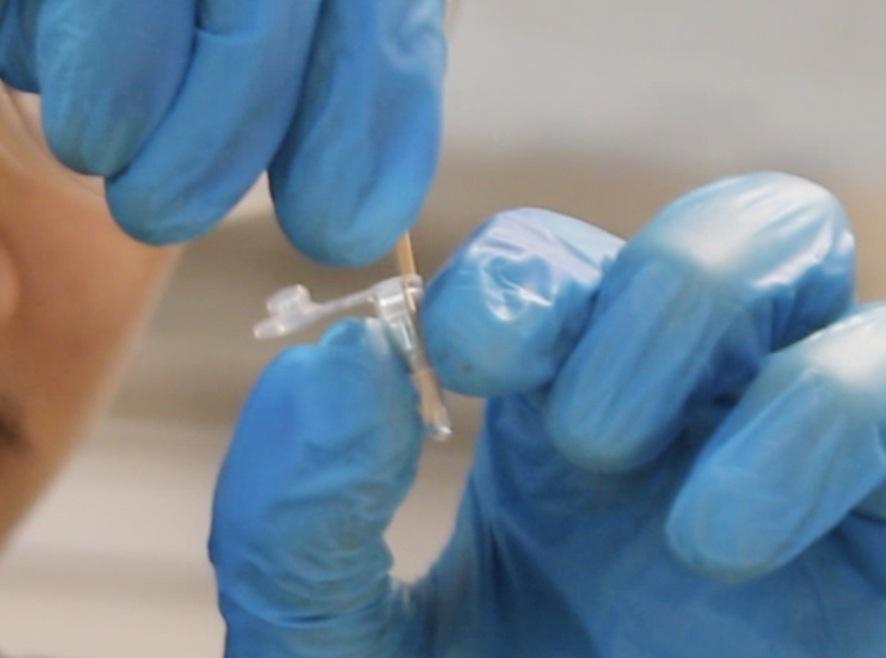
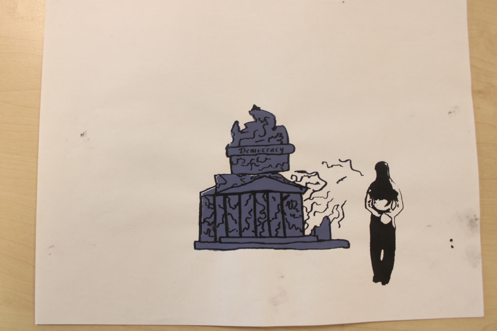

In our new media and tech class we did an investigation to look into our DNA length. Our goal was to find out who we matched with and dive deeper into race and if it was found socialogically and/or genetically. We found this information through DNA extraction, PCR amplification, and gel electrophoresis. Throughout the project we dove deeper into concepts surrounding the stroop test and socially built concepts and rules. Once the lab was completed we put together b-roll and interview footage to create a documentary following the process!


Each team made the documentary in three main parts: the initial interview, the B-roll, and the final interview. We shot the initial interview before beginning the lab because we were trying to predict what the results would look like and who we would match with. Throughout the lab, each team filmed plenty of B-roll that later became the middle section of the documentary, explaining what happened during the actual lab and how we completed the process. Finally, the final interview was filmed directly after the experiment to capture the lab results, whether our hypothesis was correct, and our surprise at the outcome. To put all of the footage together, each team member was responsible for editing one section of the documentary. I edited the final interview section as well as helped assemble the final version of the documentary. Overall, this process allowed each team member to contribute to the project while creating a documentary that clearly showed both our experiment and our reactions to the results.
photo here

Race is socially and psychologically real. We can see this through many different instances but especially in the implicit association test (IAT) makes people match words with specific pictures. More specifically, the IAT makes people match positive and negative with different photos of various races, religions, and genders. In one test it can give you a photo of a black man and a white man with the words underneath them switching as the test goes on, so on one question the white man may have negative words, but on the next the black man may have them. In Americans, the test showed that many people hesitated when associating black people with the positive words and white people with bad ones. It shows that many people have a hidden bias when looking at someone's race, religion, gender, etc. We can also see how people and social treatment can affect the learning and smarts of a race as well as their overall push to do things when a 3rd grade teacher split her students into two groups, blue eyed, and brow eyed. On the first day she encouraged the blue eyed group and told them that they were smarter, stronger, and better than the brown eyed group. On that day the blue eyed group sorted the cards with much efficiency, while the brown eyed group took much longer and the blue eyed kids picked on the blown eyed kids a lot. On the second day of the social experiment the teacher told her students that the brown eyed group was not better than the blue eyed group, and they were smarter, stronger, and better. On that day the brown eyed kids card sorting time went down significantly, while the blue eyed group went up a good amount. The blue-eyed kids' behavior this day was much better than the last. When something is socially and psychologically real, it means that it exists within societal means. People think, believe, and act like these “rules” are real. These rules are impacted by people's thoughts, feelings, and behaviors. People invent “rules” that they truly believe society should live by. These ideals may not be supported by true fact but they're based on many people's feelings toward that group or thing. These traits can be passed down and spread through society by just word of mouth and media. It could be subtle but it could slowly turn into something bigger. The idea of Social and Psychological reality or race is true, and we can see it happen in history throughout many decades. The common theme is that one race is “better” than another. This happened heavily previously in American history with slavery, accompanying lots of racism towards black people. This real life situation matches with the 3rd grade teachers classroom experiment. White people said that they were better than black people, made laws, and confirmed it socially with segregation and domination towards the group. This period of time in America has not just stopped but society allowed the themes of racism to drip through to modern day society, where racism is still very prevalent. When we hear something bad about somebody we tend to grasp onto and exaggerate that idea.
eprerofuqeonuyobqnreybeorfuhoqerncjxkjvhieufrheorm